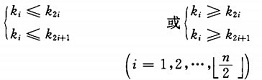
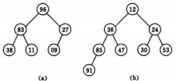

当n较大，则应采用时间复杂度为O(nlog2n)的排序方法：快速排序、堆排序或归并排序序。
快速排序：是目前基于比较的内部排序中被认为是最好的方法，当待排序的关键字是随机分布时，快速排序的平均时间最短；
基本思想：将一个数据插入到已经排好序的有序数据中，从而得到一个新的、个数加一的有序数据。
算法适用于少量数据的排序，时间复杂度为O(n^2)
基本思想：将一个记录插入到已排序好的有序表中，从而得到一个新，记录数增1的有序表。即：先将序列的第1个记录看成是一个有序的子序列，然后从第2个记录逐个进行插入，直至整个序列有序为止。
function insertSort(arr) {
var temp, i, j;
for (i = 1; i < arr.length; i++) {
temp = arr[i];
for (j = i - 1; j >= 0 && temp < arr[j]; j--) {
arr[j + 1] = arr[j];
}
arr[j + 1] = temp;
}
}
insertSort(inputArr);
console.log(inputArr);
基本思想： 先将整个待排序的记录序列分割成为若干子序列分别进行直接插入排序，待整个序列中的记录“基本有序”时，再对全体记录进行依次直接插入排序。
// 增量序列 Math.pow(2,n) - 1 效率较高
var d = [511, 255, 127, 63, 31, 15, 7, 3, 1]
/**
* 希尔排序算法
* @param {[int[]]} arr 待排序数组
* @param {[int[]]} d 增量序列
*/
function shellSort(arr, d) {
var i, j, k, dk, temp;
for (i = 0; i < d.length; i++) {
dk = d[i];
for (j = dk; j < arr.length; j++) {
temp = arr[j];
for (k = j - dk; k >= 0 && temp < arr[k]; k -= dk) {
arr[k + dk] = arr[k];
}
arr[k + dk] = temp;
}
}
}
shellSort(inputArr,d);
console.log(inputArr);
基本思想：两两比较待排序记录的关键字，若两个记录的次序相反则交换这两个记录，直到没有反序的记录为止。
基本思想：在要排序的一组数中，对当前还未排好序的范围内的全部数，自上而下对相邻的两个数依次进行比较和调整，让较大的数往下沉，较小的往上冒。即：每当两相邻的数比较后发现它们的排序与排序要求相反时，就将它们互换。
function bubbleSort(arr) {
var i, j, temp;
var flag = true,
for (i = arr.length - 1; i > 0 && flag; i--) {
flag = false;
for (j = 0; j < i; j++) {
if (arr[j] > arr[j + 1]) {
flag = true;
temp = arr[j];
arr[j] = arr[j + 1];
arr[j + 1] = temp;
}
}
}
}
bubbleSort(inputArr);
console.log(inputArr);
基本思想：通过一趟排序将要排序的的记录分割成独立的两个部分，其中一部分的所有记录的关键字值都比另一部分的所有记录关键字值小，然后再按此方法将这两部分记录分别进行快速排序，整个排序过程都可以递归进行，以此达到整个记录序列变成有序。
/**
* 一趟快速排序
* 交换arr[i..j]的记录，使支点记录到位，并返回支点位置
*/
function partition(arr, i, j) {
var pivot = arr[i];
while (i < j) {
while (i < j && pivot <= arr[j]) {
j--;
}
if (i < j) {
arr[i] = arr[j];
i++;
}
while (i < j && pivot >= arr[i]) {
i++;
}
if (i < j) {
arr[j] = arr[i];
j--;
}
}
arr[i] = pivot;
return i;
}
/**
* 递归调用 partition
* @param {[int[]]} arr 待排数组
* @param {[int]} low 上边界
* @param {[int]} height 下边界
*/
function qSort(arr, low, height) {
if (low < height) {
var pivot = partition(arr, low, height);
qSort(arr, low, pivot - 1);
qSort(arr, pivot + 1, height);
}
}
function quickSort(arr) {
qSort(arr, 0, arr.length - 1);
}
quickSort(inputArr);
console.log(inputArr);
基本思想：每一趟从待排序列中选取一个关键字值最小的记录，也即第1趟从n个记录中选取关键字值最小的记录，在第二趟中，从剩下的n-1个记录中选取关键字值最小的记录鱼第二个记录交换；直到整个序列中的记录都选完位置。
基本思想：在要排序的一组数中，选出最小（或者最大）的一个数与第1个位置的数交换；然后在剩下的数当中再找最小（或者最大）的与第2个位置的数交换，依次类推，直到第n-1个元素（倒数第二个数）和第n个元素（最后一个数）比较为止。
function selsectSort(arr) {
var temp, min, minIndex;
for (var i = 0; i < arr.length - 1 ; i++) {
min = arr[i];
minIndex = i;
for (var j = i + 1; j < arr.length; j++) {
if (arr[j] < min) {
min = arr[j];
minIndex = j;
}
}
if (minIndex != i) {
temp = arr[i];
arr[i] = arr[minIndex];
arr[minIndex] = temp;
}
}
}
selsectSort(inputArr);
console.log(inputArr);
堆排序是一种树形选择排序，是对直接选择排序的有效改进。
基本思想：堆的定义如下：具有n个元素的序列（k1,k2,...,kn),当且仅当满足
时称之为堆。由堆的定义可以看出，堆顶元素（即第一个元素）必为最小项（小顶堆）。
若以一维数组存储一个堆，则堆对应一棵完全二叉树，且所有非叶结点的值均不大于(或不小于)其子女的值，根结点（堆顶元素）的值是最小(或最大)的。如：
（a）大顶堆序列：（96，83，27，38，11，09）
（b）小顶堆序列：（12，36，24，85，47，30，53，91）
初始时把要排序的n个数的序列看作是一棵顺序存储的二叉树（一维数组存储二叉树），调整它们的存储序，使之成为一个堆，将堆顶元素输出，得到n 个元素中最小(或最大)的元素，这时堆的根节点的数最小（或者最大）。然后对前面(n-1)个元素重新调整使之成为堆，输出堆顶元素，得到n 个元素中次小(或次大)的元素。依此类推，直到只有两个节点的堆，并对它们作交换，最后得到有n个节点的有序序列。称这个过程为堆排序。
/**
* 筛选算法
* @param {[int[]]} arr [description]
* @param {[int]} low [description]
* @param {[int]} height [description]
*/
function shift(arr, low, height) {
var i = low;
var j = 2 * i + 1;
var temp = arr[i];
while (j <= height) {
if (j + 1 <= height && arr[j] < arr[j + 1]) {
j++;
}
if (temp < arr[j]) {
arr[i] = arr[j];
i = j;
j = i * 2 + 1;
} else {
break;
}
}
arr[i] = temp;
}
function heapSort(arr) {
var temp, height, n;
n = arr.length - 1;
height = (arr.length >> 1) - 2;
for (var i = height; i >= 0; i--) {
shift(arr, i, n);
}
while (n > 0) {
temp = arr[0];
arr[0] = arr[n];
arr[n] = temp;
n--;
shift(arr, 0, n);
}
}
heapSort(inputArr);
console.log(inputArr);